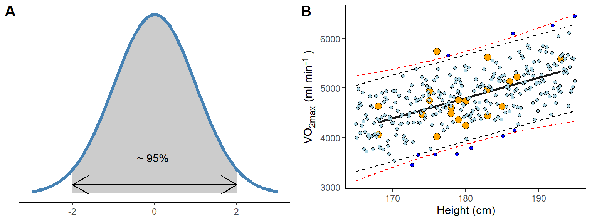
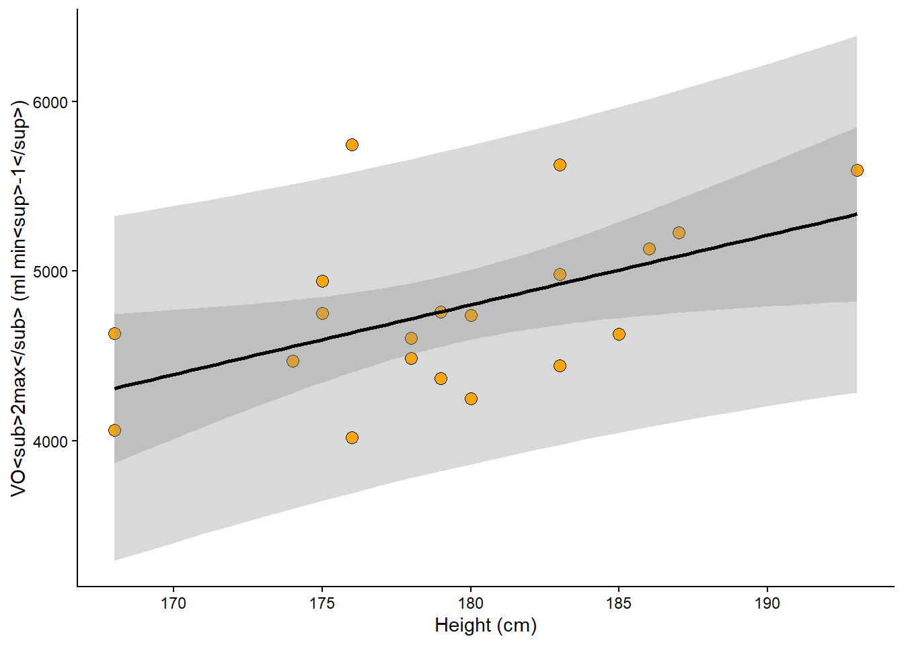
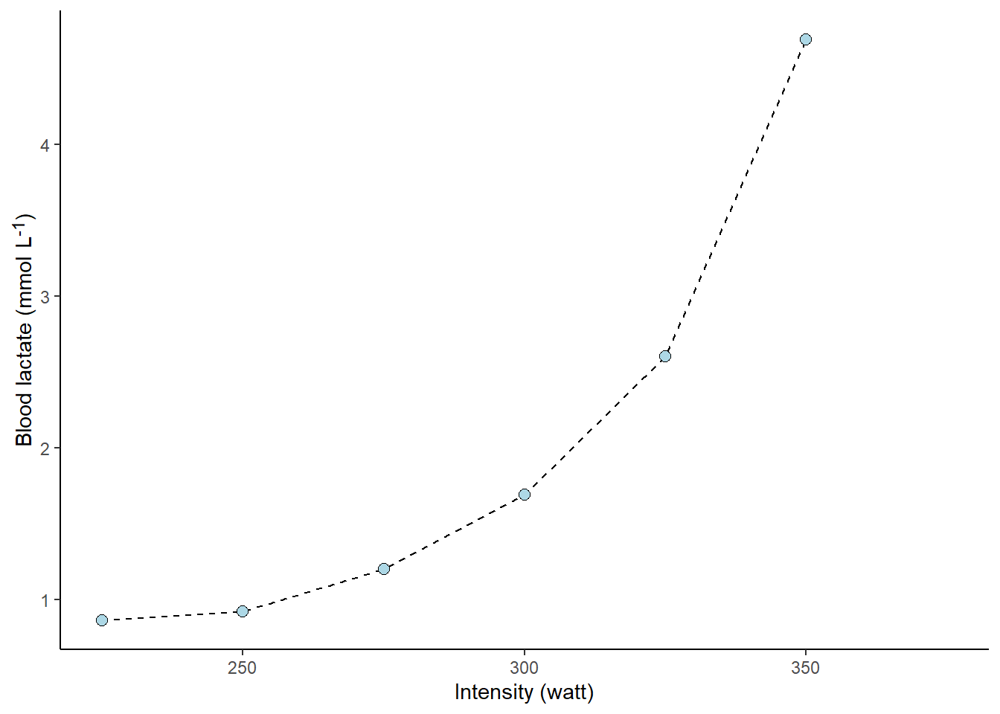
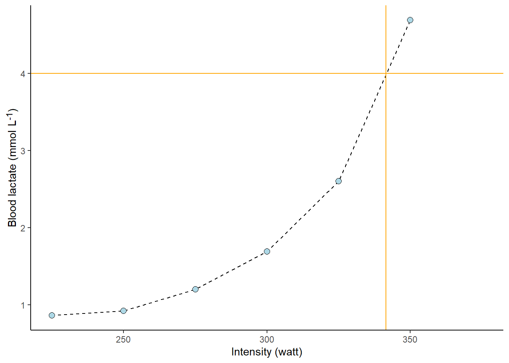
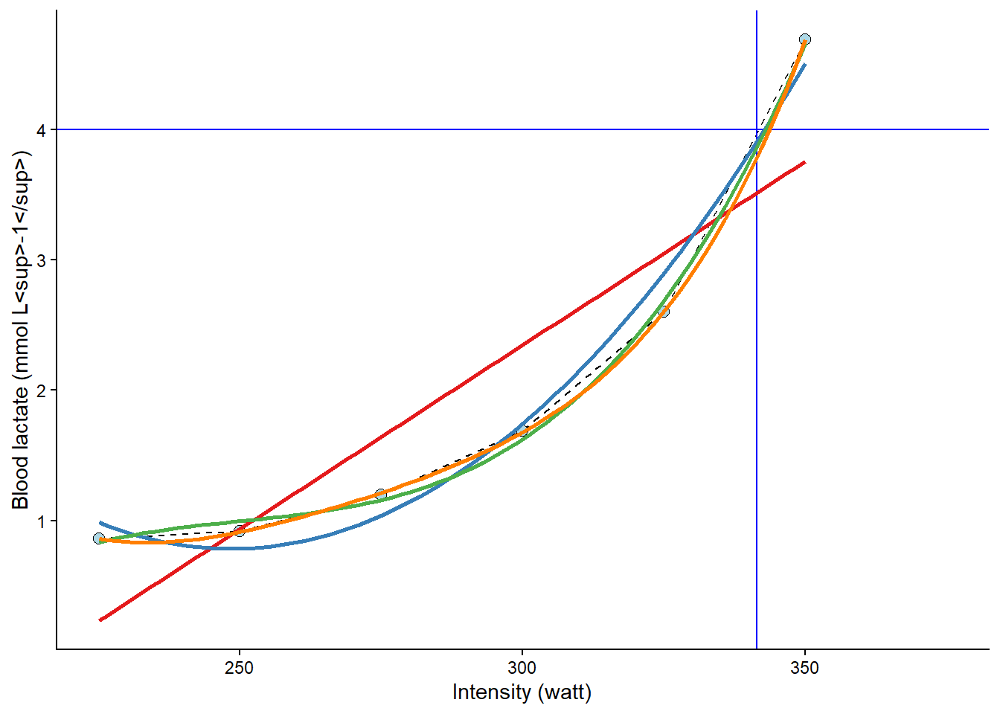
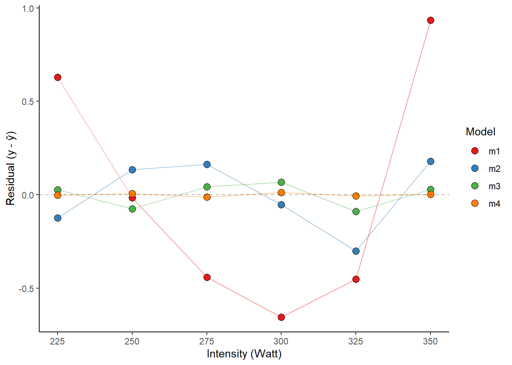
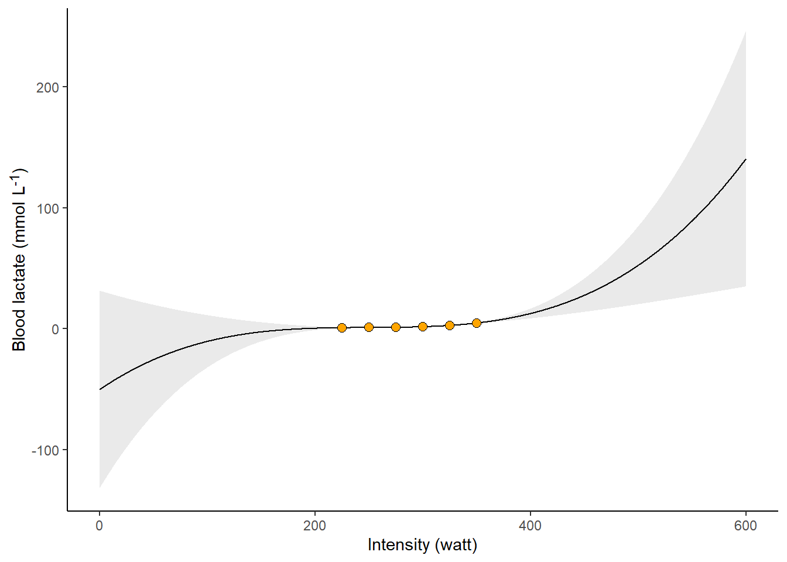

library(tidyverse)
library(exscidata)
data("cyclingstudy")
# A simple plot of the association
cyclingstudy |>
filter(timepoint == "pre") |>
select(subject, group, VO2.max, height = height.T1) |>
ggplot(aes(height, VO2.max)) +
geom_point() +
geom_smooth(method = "lm", se = FALSE)8 Predictions, linear and curve-linear relationships
In this chapter, we will start by making predictions from regression models. Predictions are model estimates of potential outcome values when we hold the values of predictor variables constant. In a previous chapter, we looked at straight-line relationships. Many things in life are not straight. In this chapter, we will add curve-linear relationships to our repertoire.
The chapter is focusing on R, but you should be able to follow the main idea even if you do not execute R code on your own.
8.1 Predicting from data
Because of the relationship between inner dimensions (such as the heart chambers) and our height, we might expect to see a relationship between body height and VO2max. The idea is that we will build a model and use it to make predictions of our outcome with new data. Later, we will see that this is one of the many benefits of the powerful regression model technique.
As a first step, it is a good idea to get a visual representation of the prospective model. In the code chunk below, we load the cyclingstudy data set from the exscidata package and also load tidyverse. We then plot the relationship between height and VO2.max. In the ggplot call, a good starting point is to use geom_point together with geom_smooth, which will produce a scatter plot with a best-fit line. Notice that method = "lm" and se = FALSE are being used to make sure you get a straight line (method = "lm") and no confidence bands (se = FALSE). Copy the code into your own document and run the code.
We will now construct the model. The lm function (for linear model) takes a formula and a data set in its simplest form. We need to save the model’s output in an object so we can work with it later. In the code below, I suggest storing the model object as m1.
# Store the data set needed in the model fitting
dat <- cyclingstudy |>
filter(timepoint == "pre") |>
select(subject, group, VO2.max, height = height.T1) |>
print()
# Fit the model
m1 <- lm(VO2.max ~ height, data = dat)The above code will store an object in your environment. Using this object, we may now make predictions. The manual way of making a prediction would be to get the coefficients from the model and use them with new data. In the code chunk below, I retrieve coefficients from the model representing the intercept and slope. Remembering the basic mathematics of this simple model tells us that we can predict VO2max using the estimates from the model. These estimates can be retrieved using coef(). The intercept will be the first coefficient (coef(m1)[1]), and the slope will be the second (coef(m1)[2]). By adding them together after multiplying the slope parameter by our new data, we will get the prediction.
new_height <- 185
prediction <- coef(m1)[1] + coef(m1)[2] * new_height R has some built-in functions for this kind of operation. We can use the predict function to calculate what each observation would look like if it were “on the regression line.” Using predict on the model without new data will give you the same values as the fitted function; try it out!
# Store output
pred <- predict(m1)
fit <- fitted(m1)
# Plot the values
data.frame(pred, fit) %>%
ggplot(aes(pred, fit)) + geom_point()predict has an argument called newdata; here, we can use a new data frame with the same predictors as in the data set used to fit the model. We may use this new data set to make several predictions from our model.
# New Data Frame containing data we want to predict with
ndf <- data.frame(height = c(160, 170, 180, 190))
predictions <- predict(m1, newdata = ndf)Unsurprisingly, an increased height gives us higher predictions of VO2max. What would be your VO2max given this model?
8.2 Uncertanties in predictions
8.2.1 Prediction intervals
When we are interested in a model’s ability to predict values from new data, we might also be interested in a range of plausible values for our prediction. A prediction interval can be constructed based on the model to tell us where we can expect future observations with a specified level of certainty. In previous chapters, we introduced a general notation for the linear model. In this case, we can write our model as
\[ \begin{align} y_i &\sim \operatorname{Normal}(\mu_i, \sigma) \\ \mu &= \beta_0 + \beta_1 \times x_i \end{align} \]
This is a model of the process that generates the data. Using the linear prediction (\(\mu = \beta_0 + \beta_1 \times x_i\)) and the expected variability around the mean (\(\sigma\)), we can define a region in which 95% of future observations would fall, if the model really describes the outside world. An approximation of this region is
\[ y = \hat{\mu} \pm 2 \times \hat{\sigma} \]
Where \(\hat{\mu}\) and \(\hat{\sigma}\) are the mean and standard deviation of a normal distribution estimated from the data. Multiplying \(\sigma\) by 2, approximately gives us 95% of possible values of the normal distribution (Figure 8.1 A). By simulating data from the model, we can get a sense of what the model predicts. About 95% of the predicted values will fall inside the 95% prediction interval.

The above are approximations! Suppose we use formal techniques, such as the predict function in R. In that case, we will get slightly wider prediction limits due to the incorporation of uncertainty in estimating model parameters (μ and σ, see Figure 8.1 B, red dashed lines). However, relaxing the mathematical and philosophical rigour, we can regard the prediction interval based on the general model definition above as an interval of plausible values for individual observations. The prediction interval tells us about the model’s expectations if we were to gather new observations.
The prediction interval can be easily visualized in R. In the code below, the predict function is used to create a data frame with predicted values over the whole range of observed values in the data set. seq(from = min(dat$height) to = max(dat$height)) creates a sequence of values that goes from the minimum in the data to the maximum. We will then use geom_ribbon to plot them together with the observed data. Notice that we must transform the predicted values into a data frame and include the variables to match our original ggplot2 call.
Code
# Create predictions based on min to max observed height values
pred.vals <- predict(m1,
newdata = data.frame(height = seq(from = min(dat$height),
to = max(dat$height))),
interval = "predict") |>
## Transform to a data frame and add variables to correspond to our data set `dat`
data.frame() |>
mutate(VO2.max = fit,
height = seq(from = min(dat$height), to = max(dat$height)))
# Plot the data and prediction intervals
cyclingstudy |>
filter(timepoint == "pre") |>
select(subject, group, VO2.max, height = height.T1) |>
ggplot(aes(height, VO2.max)) +
geom_ribbon(data = pred.vals, # We need new data for this layer
aes(ymin = lwr, ymax = upr), # Add lower and upper bounds
fill = "steelblue", # Fill with a nice color
alpha = 0.2) + # Make the fill "transparent"
geom_point() + # Add observed points from the original data set
geom_smooth(method = "lm", se = FALSE) Is the model any good? The actual value might be about 20% higher or lower than the prediction based on body height. It is up to us to consider if this is a good model for predicting VO2max.
8.2.2 Confidence intervals
The prediction interval incorporates σ from our model definition to predict new potential observations from the process that generated the data. However, when we are interested in the uncertainty of the average prediction from the model we will use another interval, this interval, often called the confidence interval, represent the models best guess about the true world average association between predictors and outcome. We will use the confidence interval later to provide uncertainty limits around estimates and perform hypothesis tests. For now, it suffice to understand that confidence intervals concern the reliability of estimates of the average (see Figure 8.2 for a comparison to prediction intervals).

8.3 The workload-lactate relationship - Curve-linear relationships
In the cyclingstudy data set, data from lactate threshold tests are recorded for each participant. We need to “wrangle” the data set a bit to get the data in a format more suitable for analysis. In the code below, I will first select columns needed for the analyses and the filter to retain one participant and one time-point. These data are then converted from a wide to long (tidy) format using the pivot_longer function. Notice that each of the lactate columns starts with lac.. This information can be used in pivot_longer when rearranging the data. In pivot_longer, we also convert the values to numeric values using as.numeric. Finally, we plot the data.
The resulting plot (Figure 8.3) shows a point for every lactate measurement. We have also connected the dots with geom_line, which draws straight lines between each point. The straight line can be used to interpolate values between the observed lactate values. This is a common technique to calculate a lactate threshold, often defined as the intensity at 4 mmol L
Code
library(tidyverse)
library(exscidata)
library(ggtext)
data("cyclingstudy")
cyclingstudy |>
# Select columns needed for analysis
select(subject, group, timepoint, lac.225:lac.375) |>
# Only one participant and time-point
filter(timepoint == "pre", subject == 10) |>
# Pivot to long format data using the lactate columns
pivot_longer(names_to = "watt",
values_to = "lactate",
names_prefix = "lac.",
names_transform = list(watt = as.numeric),
cols = lac.225:lac.375) |>
# Plot the data, group = subject needed to connect the points
ggplot(aes(watt, lactate, group = subject)) +
geom_line(lty = 2) +
geom_point(shape = 21, fill = "lightblue", size = 2.5) +
theme_classic() +
labs(y = "Blood lactate (mmol L<sup>-1</sup>)",
x = "Intensity (watt)") +
theme(axis.title = element_markdown())
The following figure (Figure 8.4) shows the value of x (watt, intensity) when y (lactate) is set to 4. The lines are added by eyeballing1 the expected value. This is all fine; we have an approximate lactate threshold.
Code
cyclingstudy |>
# Select columns needed for analysis
select(subject, group, timepoint, lac.225:lac.375) |>
# Only one participant and time-point
filter(timepoint == "pre", subject == 10) |>
# Pivot to long format data using the lactate columns
pivot_longer(names_to = "watt",
values_to = "lactate",
names_prefix = "lac.",
names_transform = list(watt = as.numeric),
cols = lac.225:lac.375) |>
# Plot the data, group = subject needed to connect the points
ggplot(aes(watt, lactate, group = subject)) +
geom_line(lty = 2) +
geom_point(shape = 21, fill = "lightblue", size = 2.5) +
# Adding straight lines at specific values
geom_hline(yintercept = 4, color = "orange") +
geom_vline(xintercept = 341.5, color = "orange") +
theme_classic() +
labs(y = "Blood lactate (mmol L<sup>-1</sup>)",
x = "Intensity (watt)") +
theme(axis.title = element_markdown())
To get a better approximation, we could make use of the curve-linear model of the relationship between exercise intensity and lactate accumulation. The “curvier” the relationship, the more wrong the above approximation would be 2. We can add a curve-linear model on top of our plot using the geom_smooth function in our ggplot call. In the code below, we will actually use several polynomial models together with a straight line to assess their fit. A polynomial model includes the predictor variable as multiple intermediates, such as:
\[ \begin{align} y &\sim \operatorname{Normal}(\mu, \sigma) \\ \mu &= \beta_0 + \beta_1x + \beta_2x^2 + \beta_3x^3 \end{align} \]
This bends the line to better fit the data points. As we can see in the resulting plot (Figure 8.5), the different models are not that different around the 4 mmol L-1 mark. However, the linear model (\(\beta_0 + \beta_1x\)) is just wrong at around 300 watts, and the second-degree polynomial model (\(\beta_0 + \beta_1x + \beta_2x^2\)) is wrong at 275 watts. The third and fourth degree polynomial model does not differ much from observed values or each other (\(\beta_0 + \beta_1x + \beta_2x^2 + \beta_3x^3\) and \(\beta_0 + \beta_1x + \beta_2x^2 + \beta_3x^3 + \beta_4x^4\)).
Code
cyclingstudy |>
# Select columns needed for analysis
select(subject, group, timepoint, lac.225:lac.375) |>
# Only one participant and time-point
filter(timepoint == "pre", subject == 10) |>
# Pivot to long format data using the lactate columns
pivot_longer(names_to = "watt",
values_to = "lactate",
names_prefix = "lac.",
names_transform = list(watt = as.numeric),
cols = lac.225:lac.375) |>
# Plot the data, group = subject needed to connect the points
ggplot(aes(watt, lactate, group = subject)) +
geom_line(lty = 2) +
geom_point(shape = 21, fill = "lightblue", size = 2.5) +
geom_hline(yintercept = 4, color = "blue") +
geom_vline(xintercept = 341.5, color = "blue") +
# Adding a straight line from a linear model
geom_smooth(method = "lm", se = FALSE, formula = y ~ x, color = "#e41a1c") +
# Adding a polynomial linear model to the plot
# poly(x, 2) add a second degree polynomial model.
geom_smooth(method = "lm", se = FALSE, formula = y ~ poly(x, 2), color = "#377eb8") +
# poly(x, 3) add a third degree polynomial model.
geom_smooth(method = "lm", se = FALSE, formula = y ~ poly(x, 3), color = "#4daf4a") +
# poly(x, 4) add a forth degree polynomial model.
geom_smooth(method = "lm", se = FALSE, formula = y ~ poly(x, 4), color = "#ff7f00") +
theme_classic() +
labs(y = "Blood lactate (mmol L<sup>-1</sup>)",
x = "Intensity (watt)") +
theme(axis.title = element_markdown())
# #fee090 represent color codes in th HEX format, palettes for different color can be found
# here: https://colorbrewer2.org/
We may fit these models formally using lm and check their residuals. First, we will store the data set in an object called lactate and use this data set in several lm calls. The same formula can be used as in geom_smooth, but we must use the actual variable names.
Code
lactate <- cyclingstudy |>
# Select columns needed for analysis
select(subject, group, timepoint, lac.225:lac.375) |>
# Only one participant and time-point
filter(timepoint == "pre", subject == 10) |>
# Pivot to long format data using the lactate columns
pivot_longer(names_to = "watt",
values_to = "lactate",
names_prefix = "lac.",
names_transform = list(watt = as.numeric),
cols = lac.225:lac.375) |>
# Remove NA (missing) values to avoid warning/error messages.
filter(!is.na(lactate))
# fit "straight line" model
m1 <- lm(lactate ~ watt, data = lactate)
# fit second degree polynomial
m2 <- lm(lactate ~ poly(watt, 2, raw = TRUE), data = lactate)
# fit third degree polynomial
m3 <- lm(lactate ~ poly(watt, 3, raw = TRUE), data = lactate)
# fit forth degree polynomial
m4 <- lm(lactate ~ poly(watt, 4, raw = TRUE), data = lactate)
# Store all residuals as new variables
lactate$resid.m1 <- resid(m1)
lactate$resid.m2 <- resid(m2)
lactate$resid.m3 <- resid(m3)
lactate$resid.m4 <- resid(m4)
lactate %>%
# gather all the data from the models
pivot_longer(names_to = "model",
values_to = "residual",
names_prefix = "resid.",
names_transform = list(residual = as.numeric),
cols = resid.m1:resid.m4) %>%
# Plot values with the observed watt on x axis and residual values at the y
ggplot(aes(watt, residual, fill = model)) +
geom_line(alpha = 0.4, aes(color = model)) +
geom_point(shape = 21, size = 3) +
# To set the same colors/fills as above we use scale fill manual
scale_fill_manual(values = c("#e41a1c", "#377eb8", "#4daf4a", "#ff7f00")) +
scale_color_manual(values = c("#e41a1c", "#377eb8", "#4daf4a", "#ff7f00"),
guide = "none") +
geom_hline(yintercept = 0, lty = 2, alpha = 0.3) +
theme_classic() +
labs(x = "Intensity (Watt)",
y = "Residual (y - ŷ)",
fill = "Model") +
theme(axis.title = element_markdown())
The fourth-degree polynomial model best fits the observed values, followed by the third-degree model. This is not strange, as the polynomial model with increased degrees has more flexibility to fit the data. The problem with polynomial models is that you cannot fit a fourth-degree polynomial model with only four data points. You may also have a model that is more sensitive to, for example, a bad measurement. Let’s settle for the third degree model.
The next step will be to predict x from y. Remember that we have modelled the effect of x on y, i.e., the effect of exercise intensity on lactate. Using predict, we may easily predict a lactate value for a specific value of watt. Since we want the inverse prediction, we have to use some tricks in our prediction. The code below creates a data set of intensity values watt using the seq function, which basically creates a vector of numbers with a specific distance between them. We can then use this vector of numbers to predict lactate values and find the value closest to 4 mmol L-1.
# new data data frame
ndf <- data.frame(watt = seq(from = 225, to = 350, by = 0.1)) # high resolution, we can find the nearest10:th a watt
ndf$predictions <- predict(m3, newdata = ndf)
# Which value of the predictions comes closest to our value of 4 mmol L-1?
# abs finds the absolute value, makes all values positive,
# predictions - 4 givs an exact prediction of 4 mmol the value zero
# filter the row which has the prediction - 4 equal to the minimal absolut difference between prediction and 4 mmol
lactate_threshold <- ndf |>
filter(abs(predictions - 4) == min(abs(predictions - 4)))Our best estimate of the lacatate threshold is 343. We have approximated the exercise intensity at a specific value of lactate.
There a several ways of doing such calculations, and many other concepts of lactate thresholds exists. Newell (Newell et al. 2007) has developed R code for calculating several of these concepts. The code is a bit old but can be found here. Other have implemented R code in applications to calculate lactate thresholds, for example lactate dashboard.
Newell, J., D. Higgins, N. Madden, J. Cruickshank, J. Einbeck, K. McMillan, and R. McDonald. 2007. “Software for Calculating Blood Lactate Endurance Markers.” Journal Article. Journal of Sports Sciences 25 (12): 1403–9. https://doi.org/10.1080/02640410601128922.
Most techniques and concepts rely on an underlying regression model.
8.3.1 The dangers of polynomial models
In the application discussed above, modeling the relationship between work intensity and blood lactate, the polynomial model performs well. However, the polynomial regression model estimates parameters to best fit the data we have observed. This means that outside the range of the observed data, we should instead expect the model to predict very unexpected values. In Figure 8.7 we can see that the model (a third-degree polynomial) predicts implausible values (< 0 mmol L-1) at plausible intensity values (watt > 0). This is a general lesson from fitting regression models. However, more flexibility in the curves can lead to increasingly poor predictions outside the range of the data.
Code
# new data data frame
ndf <- data.frame(watt = seq(from = 0, to = 600, by = 0.1)) # high resolution, we can find the nearest10:th a watt
ndf<- cbind(ndf, predict(m3, newdata = ndf, interval = "confidence"))
cyclingstudy |>
# Select columns needed for analysis
select(subject, group, timepoint, lac.225:lac.375) |>
# Only one participant and time-point
filter(timepoint == "pre", subject == 10) |>
# Pivot to long format data using the lactate columns
pivot_longer(names_to = "watt",
values_to = "lactate",
names_prefix = "lac.",
names_transform = list(watt = as.numeric),
cols = lac.225:lac.375) |>
# Plot the data, group = subject needed to connect the points
ggplot(aes(watt, lactate, group = subject)) +
geom_line(data = ndf,
aes(watt, fit, group = NULL)) +
geom_ribbon(data = ndf,
aes(watt,fit, ymin = lwr,
ymax = upr, group = NULL),
alpha = 0.1) +
geom_point(shape = 21, fill = "orange", size = 2.5) +
theme_classic() +
labs(y = "Blood lactate (mmol L<sup>-1</sup>)",
x = "Intensity (watt)") +
theme(axis.title = element_markdown())